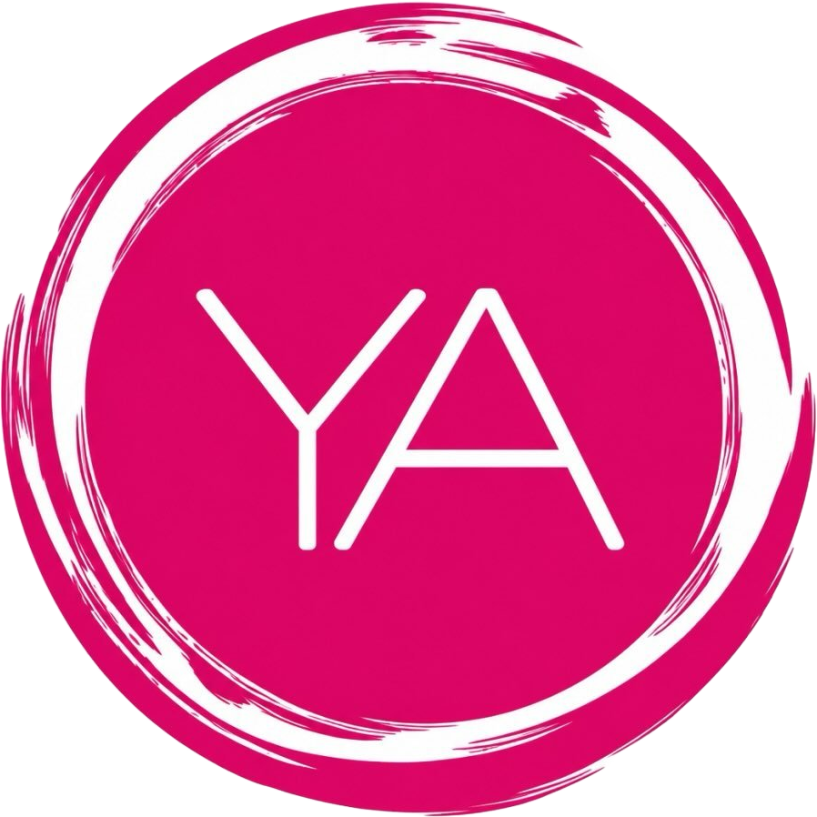
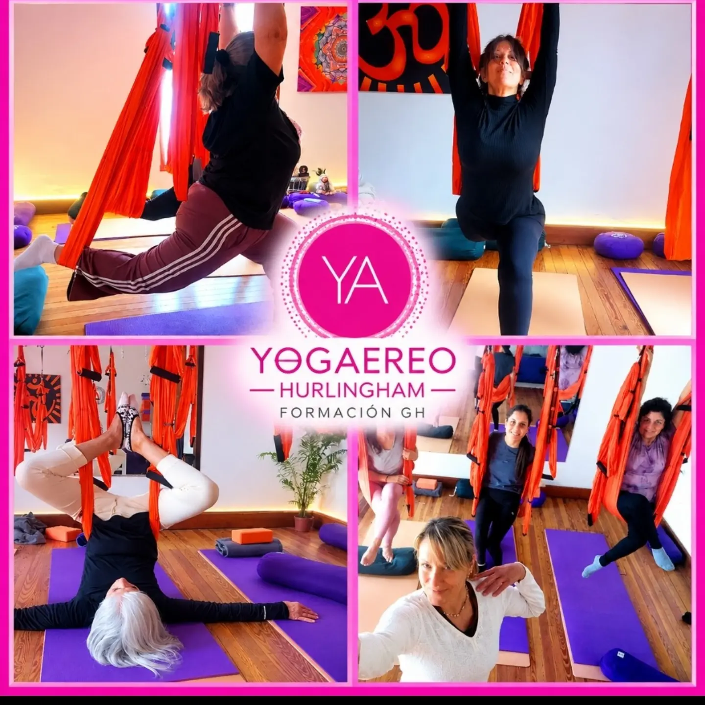

Video destacado · Empezá por acá
¿Qué es el yoga aéreo?
En este video vas a conocer de forma clara en qué consiste la práctica, cómo se trabaja con las telas y qué podés esperar de una clase.

Una práctica guiada por Mar Zubiri donde las telas y arneses sostienen tu peso para liberar tensiones en la columna, ganar flexibilidad y habitar el aire en plena calma.
100% Terapéutico
Cuidado articular y postural
La tela sostiene tu peso corporal para que logres estiramientos profundos sin forzar las articulaciones.
Al suspenderte suavemente, liberás la presión acumulada en la espalda y el cuello desde la primera sesión.
En Garibaldi 1756 te guiamos paso a paso desde cero, respetando el ritmo y la edad de cada cuerpo.
Conocé de qué se trata la práctica y después mirá cómo son las clases y sus instrucciones.
En este video vas a conocer de forma clara en qué consiste la práctica, cómo se trabaja con las telas y qué podés esperar de una clase.
Las clases
Una mirada más cercana a la práctica y a las clases en Casa Aire.
Paso a paso
Conocé las indicaciones y los movimientos de yoga aéreo con más detalle.

Un espacio para encontrarse
En Casa Aire, Hurlingham
Una invitación a bajar el ritmo y regalarse un momento de conexión, bienestar y disfrute. Las propuestas se adaptan a cada grupo: pueden venir amigas, familias o personas que quieran compartir una experiencia diferente.
Para compartir en grupo
Un recorrido suave para conectar con el cuerpo, los sentidos y el momento presente.
Algo rico para compartir: merienda con té y budines o una pequeña cena, según la propuesta del grupo.
Una experiencia inmersiva
Dejá que las vibraciones y los sonidos te acompañen mientras descansás suspendida en el aire. Un espacio para soltar tensiones, relajarte profundamente y renovar tu energía.
¿Querés organizar un encuentro para tu grupo? Escribinos y lo pensamos juntas.